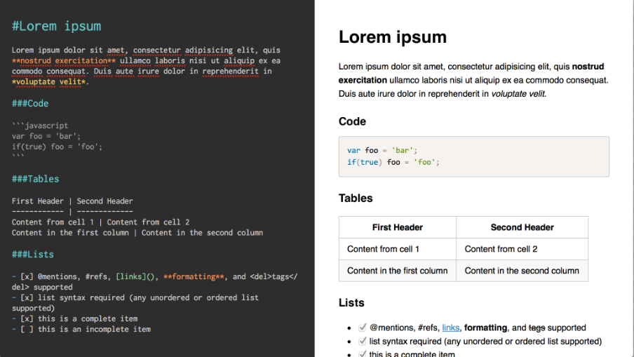
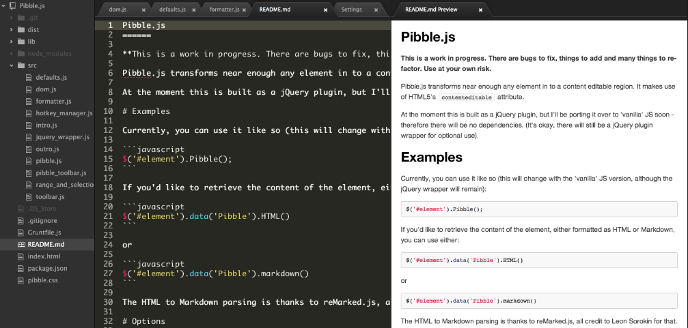

Markdown
Markdown nació como herramienta de conversión de texto plano a HTML. Aunque, en realidad, Markdown también se considera un lenguaje que tiene la finalidad de permitir crear contenido de una manera sencilla de escribir, y que en todo momento mantenga un diseño legible, así que para simplificar puedes considerar Markdown como un método de escritura.
Este método te permitirá añadir formatos tales como negritas, cursivas o enlaces, utilizando simplemente texto plano, lo que hará de tu escritura algo más simple y eficiente al evitar distracciones.

¿Para qué sirve?
Markdown no solo es útil para blogs o páginas web, en servicios como Trello o foros como Stackoverflow también soportan este lenguaje, y con el paso del tiempo encontrarás aún más lugares que lo utilicen.
Además, Markdown está cada vez más extendido en el mundo “offline”. Incluso podrías escribir un libro con él, ya que puedes exportar fácilmente el resultado final a un formato ePub.
Gracias a la simplicidad de su sintaxis podrás utilizarlo siempre que necesites escribir y dar formato rápidamente, sobre todo si quieres hacerlo desde dispositivos móviles.
¿Por qué utilizarlo?
Como acabas de ver hace un momento, este lenguaje de marcado está basado en un formato de texto plano.
Este tipo de formato siempre será compatible con todas las plataformas que utilices, así que utilizar Markdown es una manera de mantener todo tu contenido siempre accesible desde cualquier dispositivo (smartphones, ordenadores de escritorio, tablets…), ya que en cualquiera de ellas siempre encontrarás las aplicaciones adecuadas para leer y editar este tipo de contenido.
Aquí tendrás un link donde podrás observar algunos "trucos" para agilizar el aprendizaje de este lenguaje.
Editor
Atom
Atom es un editor de código de fuente abierta para macOS, Linux, y Windows con soporte para plug-ins escrito en Node.js, Incrustando Git Control, desarrollado por GitHub. Atom es una aplicacion de escritorio construida utilizando tecnologias web. La mayor parte de los paquetes tienen licencias de software libre y es construido y mantenido por su comunidad.
Lenguajes compatibles en algunos aspectos a partir de v1.5.1: HTML, CSS, Menos, Sass, GitHub Sazonó Markdown, C/C++, C#, Va, Java, Objetivo-C, Javascript, JSON, CoffeeScript, Python, PHP, Ruby, Ruby en Raíles, Shell Script, Clojure, Perl, Git, Marca, Property List(Apple), TOML, XML, YAML, Mustache, Julia & SQL.
Tras instalar Atom en nuestro ordenador, podremos instalar los paquetes necesarios para ayudarnos a programar en el lenguaje que queramos, Markdown(en tiempo real) entre ellos. Facilitándonos y agilizando así la escritura del mismo.

Pandoc, conversor universal de documentos
Pandoc es especialmente útil para diseñadores web y bloggers, ya que se centra en la conversión de diferentes formatos extendidos en dicha comunidad. Por ejemplo, es capaz de convertir HTML a Markdown y viceversa.
Uno de los puntos fuertes de Pandoc es que dispone de múltiples versiones. Aunque originalmente esta escrito en Haskell (un lenguaje de programación puramente funcional y fuertemente tipado), ha sido portado a Mac, Linux, Windows e incluso FreeBSD, pero lo mejor de todo es que también dispone de una versión online totalmente funcional. Para hacer una prueba rápida tan sólo hay que pegar el texto deseado en el formulario, seleccionar el formato de origen, el de destino y pulsar convertir.
Pandoc puede convertir desde Markdown (extendido o estricto), reStructuredText, HTML y LaTeX a los siguientes formatos:
- HTML
- Markdown (extendido o estricto)
- reStructuredText
- LaTeX
- ConTeXt
- DocBook
- Groff man
- RTF
- OpenDocument XML
- Texinfo
- MediaWiki
También es posible obtener archivos PDF a partir de los formatos de entrada mencionados, por medio de un script.
De momento sólo se puede utilizar a través de línea de comandos (salvo la versión web) y no dispone de una interfaz gráfica, pero siendo código abierto y empezando a ser conocido entre la comunidad no sería raro empezar a ver frontends dentro de poco.
Pandoc esta publicado bajo licencia GPL y se puede descargar de forma gratuita en su página web.